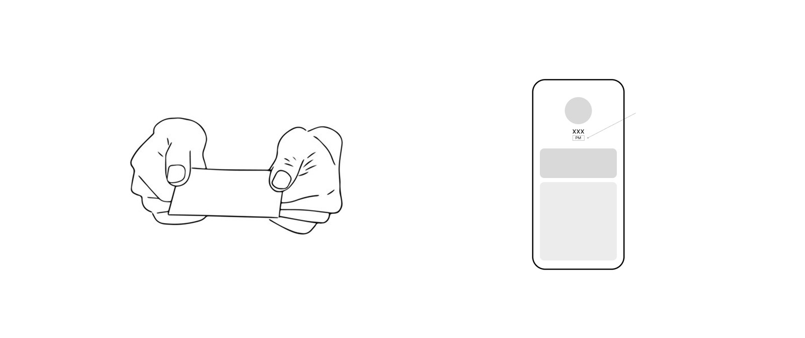
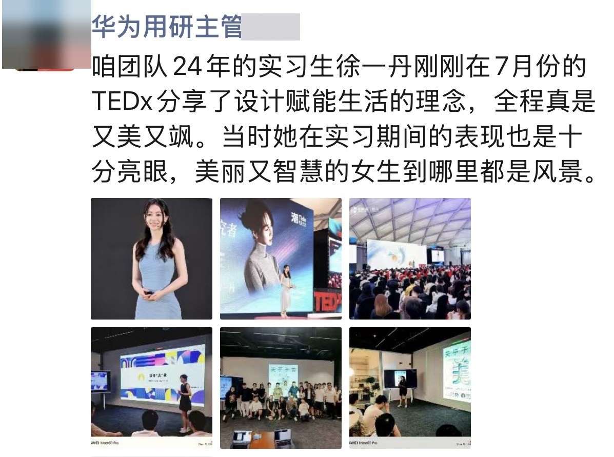
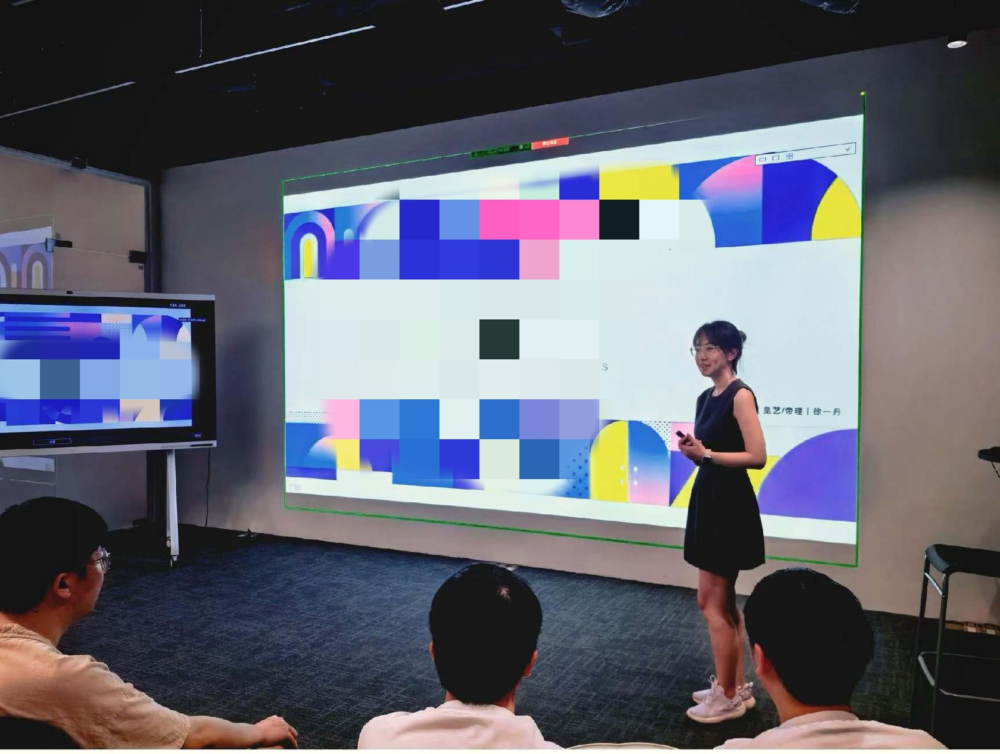

2024 · Huawei User Center Design · Platform Designer
Huawei
A unified design language for five B2B apps, and the first time AI entered the design process.
UI/UXData-DrivenCross-Team
Problem
Five B2B apps, each drifting off in its own direction. On most of them a person is reduced to a name and a job title, so the trust people have offline never reaches the screen.
What I did
Design intern in Huawei's user experience team, on three projects: user identity, structural optimisation, and cross-app consistency. Workshops and interviews first, then the design.
Result
One design language across all five apps, and an identity card system covering four occupations, presented to the product team.
🔒 Some product designs and data specifications shown here have been generalised or omitted for confidentiality. If you'd like to chat and learn more, please email me.
A unified design language for 5 B2B apps
I worked as a design intern inside Huawei's user experience team, in the B2B department. We ran three projects together: user identity, structural optimisation, and cross-app consistency.
Presenting to the Huawei UCD (User Centered Design) team
5
B2B apps in scope
4
Professional roles studied
3
Tasks delivered
2×
Data + interview methodology
Task 01 · Start from the big question
In B2B, identity is everything. Yet on most platforms, users are reduced to a name and a job title. How do you bring offline trust online without overcomplicating the product?

Offline, a handshake and a card convey who you are instantly. Online, that same trust has to be designed back in.
🧑💼 Offline
Professional attire · Business cards. Natural ways to signal who you are and establish trust at first glance. Identity is conveyed before anyone speaks.
🥷 Online
A name · A small job title. No way to show expertise, authority or warmth, so interactions feel impersonal and less credible than meeting in person.
The problem: the B2B service space is structurally complex
An app often serves multiple professional roles simultaneously, whose needs vary greatly. Some roles spend most of the day facing clients; others work across departments and regions. The user experience team and I analysed user types and typical interaction scenarios together. Two findings came out of it:
Users hold different roles within the system, and how much trust matters to their work, and how they build it, changes completely with that role
They use the platform in different scenarios, so the information worth showing changes with the scenario too
The goal: bring the connection between people back to B2B
Most B2B platforms are straightforward and restrained, prioritising efficiency over expression. A good online experience should preserve, rather than strip away, the trust and emotional connection people have offline, bringing that sense of connection back without adding complexity.
Bring offline-level trust online
Use AI to generate visual materials, so the credible visual language of each profession can be read at a glance instead of being buried in metadata.
Break the limits of a paper business card
Users switch between two modes, company-oriented or personal-oriented, to suit whichever scenario they're in.
Methodology
First-hand research: through workshops and user interviews, I identified key identity-verification scenarios: first meeting, internal collaboration, client meetings. Secondary research: how "trust" is visually established across professional contexts, and the tension between genuine ability and social stereotype that shaped our subsequent design choices.
Delivery
Presented to the product team across four occupations and two card types compatible with all five apps, helping users build a stronger first impression and faster trust online.
The four professional roles the identity system was designed around
4
Identity cards
2
Qualification levels
2
Card formats
🪪 New ID card
A redesigned identity card for the core role-based system
👤 AI avatar system
AI-generated visual language for each professional identity
🎬 Scene coverage
Company-oriented and personal-oriented modes for different moments
What I learned: in B2B design, "feeling" is not optional; it determines whether a tool is tolerated or trusted. Most B2B platforms underestimate this.
Task 02 · Structural optimisation of B2B web platforms
In the second phase, I moved to a large-scale enterprise-level web system serving users with multiple roles. This phase focused on structural design: simplifying information hierarchy and improving efficiency based on real behavioural data and user interviews.
Methodology
Behavioural data: click-through rate, dwell time, bounce rate. User interviews: what's convenient, what's confusing, what do users expect.
The framework: four behavioural patterns
An evidence-based classification that replaced intuition with a data signal and a behavioural hypothesis for every design suggestion. Each pattern maps straight to an optimisation strategy, not a guess.
Pattern
Data signal
Behavioural hypothesis
Optimisation strategy
Dispersed entrances
The same function appears on multiple pages, and clicks on it are scattered.
The user's goal is unclear, or different pages share irrelevant entry points.
Reorganise the entry path to reduce redundancy.
High click-through rate + short dwell time
Users exit immediately after entering the function.
Accidental touch, or a misleading function name.
Verify through interviews and adjust labels or layout.
Low click-through rate + long dwell time
The feature is hard to find, but once found, is used extensively.
An important function is visually underestimated.
Enhance visual hierarchy and entry-point placement.
High bounce-rate pages
The task was interrupted midway.
A lack of clear task-completion feedback loses the user's confidence.
Strengthen completion feedback and guidance for the next step.
Applications: three examples
What the framework looks like in use. Each read below starts from a data signal, not a preference, and lands on a different kind of fix.
Clear signal
Low click-through, low dwell time and high bounce, consistently. The feature is a candidate for repositioning, or even deletion.
Mixing signal
High clicks, short dwell. Usually accidental taps, or quick recognition that "this isn't what I want." Interviews told us which; often the fix was just clearer labelling and placement.
Buried value
Low click-through but long dwell. The feature is valuable and hard to find, so the fix is visibility and location, not the feature itself.
Task 03 · Cross-application consistency
Alongside the previous two projects, I maintained design consistency across all five B2B applications: analysing each app's business structure, identifying inconsistencies in shared components, and aligning the design team on a unified standard. This work is quiet, without dramatic before/after comparisons, but it's the foundation that makes everything else feel coherent.
3 things I took from Huawei
🎭 The difference is the role
Most B2C designers stumble in B2B because they keep using a personal-preference frame. B2B users aren't "me," they're "me in a certain role." Before the role is defined, every UI decision is guesswork.
🤖 AI is a possibility generator
B2B design has long been criticised for being cold and uniform. AI let me explore dozens of career-identity directions in an hour, work that used to take a week. It doesn't replace design judgment; it drops the cost of exploring to near zero.
📊 Data and intuition, cross-checked
High click-through plus short dwell time does not equal satisfaction. Behavioural data tells you what happened, interviews tell you why. Both are indispensable, and that's the lesson from this internship that stuck hardest.
After the internship
Two things happened once I left. Neither was asked for, and that is why I keep them here.
My manager wrote about me publicly
The head of user research on my team posted about me on her own social media, to her own network. Her name and picture are covered here, and I have cut the part about hiring for the next intake. What is left is what she said about the work.
The photographs in her post come from two places. The top row is my TEDx talk. The bottom row is me sharing work inside Huawei, to the team and to the wider department. I am glad she kept both, and I hope to keep going in this industry for a long time.

Posted by the head of user research on our team. Name and profile picture removed.
Our team's 2024 intern, Yidan Xu, just spoke at TEDx in July about design giving power back to everyday life. She was lovely and sharp the whole way through. Her work during the internship was outstanding too. A girl who is both beautiful and clever is a sight worth seeing, wherever she goes.
Translated from the Chinese.

One of the sharing sessions inside Huawei.
A colleague marked my report A+
A second colleague came to find me after I had gone. He told me he had read my final report and graded it A+. He did not have to tell me. That is the part I remember.